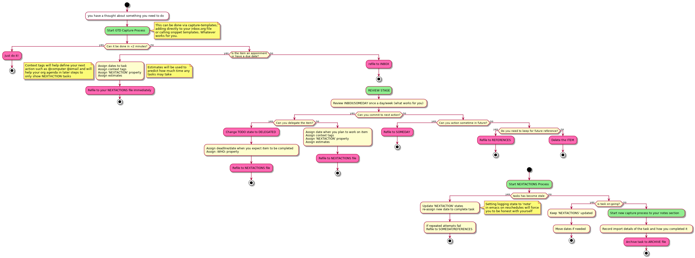

Table of Contents
My DOOM emacs private configuration:

High focus on GTD process workflow: (source)

Getting started
If you have not installed DOOM Emacs but would like to:
git clone https://github.com/nmartin84/.doom.d.git ~/.doom.d git clone https://github.com/hlissner/doom-emacs ~/.emacs.d ~/.emacs.d/bin/doom install
Otherwise, backup your existing DOOM private config and run:
mv ~/.doom.d ~/.doom.d_backup git clone https://github.com/nmartin84/.doom.d.git ~/.doom.d ~/.emacs.d/bin/doom refresh
This repo uses a literate configuration, with basic settings in ./init.el, ./packags.el, the content of ./config.el will be generated
from the Emacs Lisp code blocks in config.org. This readme file gets created when exporting config.org to markdown.
Emacs Settings
General settings
(global-auto-revert-mode t) ;; nil = do not revert on file change / t = revert buffer when file changes are made
Keys
(global-set-key (kbd "C-c C-x i") #'org-mru-clock-in) (global-set-key (kbd "C-c C-x C-j") #'org-mru-clock-select-recent-task) (bind-key "C-<down>" #'+org/insert-item-below) (map! :nvime "<f5> d" #'helm-org-rifle-directories :nvime "<f5> b" #'helm-org-rifle-current-buffer :nvime "<f5> o" #'helm-org-rifle-org-directory :nvime "<f5> a" #'helm-org-rifle-agenda-files) (map! :leader :n "e" #'ace-window :desc "Search buffer" :n "!" #'swiper :desc "Search all" :n "@" #'swiper-all :desc "Deadgrep search" :n "#" #'deadgrep :desc "Rifle directories" :n "$" #'helm-org-rifle-directories :desc "Capture" :n "X" #'org-capture (:prefix "o" :desc "Open Elfeed" :n "e" #'elfeed :n "g" #'metrics-tracker-graph :n "o" #'org-open-at-point :n "u" #'elfeed-update :n "w" #'deft) (:prefix "f" :n "o" #'plain-org-wiki-helm) (:prefix "n" :n "D" #'dictionary-lookup-definition :n "T" #'powerthesaurus-lookup-word) (:prefix "s" :n "d" #'deadgrep :n "q" #'org-ql-search :n "b" #'helm-org-rifle-current-buffer :n "o" #'helm-org-rifle-org-directory :n "." #'helm-org-rifle-directories) (:prefix "b" :n "c" #'org-board-new :n "e" #'org-board-open) (:prefix "t" :n "s" #'org-narrow-to-subtree :n "w" #'widen) (:prefix "/" :n "j" #'org-journal-search))
Popup Rules
Available options are:
:side= left / right / top / bottom ; position to display buffer:size= % of screen buffer should take up measured in decimal (.30 = 30%):select= nil = do not switch to buffer when called / t = switch to buffer when called:vslot= what slot buffer takes, if two buffers are assigned the same buffer, then they will overlap or split their space.:ttl= ??
(after! org (set-popup-rule! "^Capture.*\\.org$" :side 'right :size .50 :select t :vslot 2 :ttl 3)) (after! org (set-popup-rule! "Dictionary" :side 'bottom :size .30 :select t :vslot 3 :ttl 3)) (after! org (set-popup-rule! "*helm*" :side 'bottom :size .30 :select t :vslot 5 :ttl 3)) (after! org (set-popup-rule! "*eww*" :side 'right :size .30 :slect t :vslot 5 :ttl 3)) (after! org (set-popup-rule! "*deadgrep" :side 'bottom :height .40 :select t :vslot 4 :ttl 3)) (after! org (set-popup-rule! "*org-roam" :side 'right :size .40 :select t :vslot 4 :ttl 3)) (after! org (set-popup-rule! "\\Swiper" :side 'bottom :size .30 :select t :vslot 4 :ttl 3)) (after! org (set-popup-rule! "*Ledger Report*" :side 'right :size .30 :select t :vslot 4 :ttl 3)) (after! org (set-popup-rule! "*xwidget" :side 'right :size .50 :select t :vslot 5 :ttl 3)) ;(after! org (set-popup-rule! "*org agenda*" :side 'right :size .50 :select t :vslot 2 :ttl 3)) (after! org (set-popup-rule! "*Org ql" :side 'right :size .50 :select t :vslot 2 :ttl 3))
User Settings
These will set user settings for various functions, like export or publishing files.
(setq user-full-name "Nicholas Martin" user-mail-address "nmartin84.com")
Fonts
For fonts please download Input and DejaVu
(setq doom-font (font-spec :family "InputMono" :size 18) doom-variable-pitch-font (font-spec :family "InputMono" :height 120) doom-unicode-font (font-spec :family "InputMono") doom-big-font (font-spec :family "InputMono" :size 20)) (prefer-coding-system 'utf-8) (set-default-coding-systems 'utf-8) (set-terminal-coding-system 'utf-8) (set-keyboard-coding-system 'utf-8)
Mode line
(setq doom-modeline-gnus t doom-modeline-gnus-timer 'nil)
Theme
(setq doom-theme 'doom-snazzy) (if (equal doom-theme 'doom-snazzy) (custom-theme-set-faces 'user '(org-block ((t (:background "#20222b")))) '(org-block-begin-line ((t (:background "#282A36")))))) (if (equal doom-theme 'doom-city-lights) (setq org-emphasis-alist '(("*" (bold :foreground "MediumPurple")) ("/" (italic :foreground "VioletRed")) ("_" underline) ("=" (:foreground "PaleTurquoise")) ("~" (:foreground "PaleTurquoise")) ("+" (:strike-through t)))) (custom-theme-set-faces 'user) (setq org-todo-keyword-faces '(("TODO" :foreground "tomato" :weight bold) ("WAITING" :foreground "light sea green" :weight bold) ("STARTED" :foreground "DodgerBlue" :weight bold) ("SOMEDAY" :foreground "sky blue" :weight bold) ("INBOX" :foreground "spring green" :weight bold) ("DELEGATED" :foreground "Gold" :weight bold) ("NEXT" :foreground "violet red" :weight bold) ("DONE" :foreground "slategrey" :weight bold))))
Truncate
(setq-default truncate-lines t) (defun jethro/truncate-lines-hook () (setq truncate-lines nil)) (add-hook 'text-mode-hook 'jethro/truncate-lines-hook)
Org Mode
Agenda
(after! org (setq org-agenda-use-time-grid nil org-agenda-skip-scheduled-if-done t org-agenda-skip-deadline-if-done t org-habit-show-habits t)) (after! org (setq org-super-agenda-groups '((:auto-category t))))
Load all *.org files to agenda
(load-library "find-lisp") (after! org (setq org-agenda-files (find-lisp-find-files "~/.org/" "\.org$")))
Captures
(after! org (setq org-capture-templates '(("t" "Tasks") ("d" "Diary") ("l" "Ledger"))))
Getting Things Done
New Task File
(defun my/generate-org-task-name () (setq my-org-note--name (read-string "Name: ")) (setq my-org-note--time (format-time-string "%Y-%m-%d")) (expand-file-name (format "%s %s.org" my-org-note--time my-org-note--name) "~/.org/tasks/")) (after! org (add-to-list 'org-capture-templates '("tf" "Task File" plain (file my/generate-org-task-name) "%(format \"#+TITLE: %s\n\" my-org-note--name) \* INBOX %(format my-org-note--name) %? :PROPERTIES: :CREATED: %U :END: ")))
Child Task
(after! org (add-to-list 'org-capture-templates '("tc" "Child Task" entry (file+function buffer-name org-back-to-heading-or-point-min) "* %^{keyword|TODO|INBOX} %u %^{task} %?" :empty-lines 1)))
Capture
(after! org (add-to-list 'org-capture-templates '("tx" "Capture [WORKLOAD]" entry (file "~/.org/workload/inbox.org") "* INBOX %^{taskname}%? :PROPERTIES: :CREATED: %U :END: " :immediate-finish t)))
New Note
(setq my/org-note-categories '(("Topic: ") ("Account: ") ("Symptom: "))) (defun my/generate-org-note-categories () "Select a category for Notes" (interactive (list (completing-read "Select a category: " my/org-note-categories)))) (defun my/generate-org-note-name () (setq my-org-note--category (read-string "Category: ")) (setq my-org-note--name (read-string "Name: ")) (expand-file-name (format "%s.org" my-org-note--name) "~/.org/notes/")) (after! org (add-to-list 'org-capture-templates '("tn" "New note" plain (file my/generate-org-note-name) "%(format \"#+TITLE: %s: %s\n\" my-org-note--category my-org-note--name) %?")))
Existing Note
(defun org-capture-file-selector () "test file selector" (interactive) (setq org-notes-directory "~/.org/notes/") (concat (read-file-name "Select file: " org-notes-directory))) (after! org (add-to-list 'org-capture-templates '("te" "Existing Note" entry (file org-capture-file-selector) "* %?")))
Diary
Diary Entry
(defun my/generate-org-diary-name () (setq my-org-note--name (read-string "Name: ")) (setq my-org-note--time (format-time-string "%Y-%m-%d")) (expand-file-name (format "%s %s.org" my-org-note--time my-org-note--name) "~/.org/diary/")) (after! org (add-to-list 'org-capture-templates '("dd" "Diary" plain (file my/generate-org-diary-name) "%(format \"#+TITLE: %s\n\" my-org-note--name my-org-note--time) %u %?")))
Workouts
(after! org (add-to-list 'org-capture-templates '("dw" "Workout Log" entry(file+olp+datetree"~/.org/journal/workout.org") "** %\\1 (%\\2 calories) :: %\\3 (reps) :PROPERTIES: :ACTIVITY: %^{ACTIVITY} :CALORIES: %^{CALORIES} :REPS: %^{REPS} :COMMENT: %^{COMMENT} ")))
Food
(after! org (add-to-list 'org-capture-templates '("dF" "Food Log" entry(file+olp+datetree"~/.org/journal/food.org") "** %\\1 [%\\2] :PROPERTIES: :FOOD: %^{FOOD} :CALORIES: %^{CALORIES} :COMMENT: %^{COMMENT} :END:")))
Weigh In
(after! org (add-to-list 'org-capture-templates '("dW" "Weigh In" entry(file+olp+datetree"~/.org/journal/food.org") "** %\\1 [%\\2] :PROPERTIES: :WEIGHT: %^{WEIGHT} :COMMENT: %^{COMMENT} :END:")))
Ledger
Ledger Expense
(after! org (add-to-list 'org-capture-templates '("le" "Ledger Expense" plain(file"~/.org/journal/finance.dat") "%<%Y/%m/%d> * %^{Creditor} Expenses:%^{category|Snacks|Eating Out|Drinks|Movies|Games|Clothes|Shopping|Electronics} %^{Dollar ammount} Assets:%^{account|Checking|CreditCard}" :empty-lines 1)))
Ledger Expense Date
(after! org (add-to-list 'org-capture-templates '("ld" "Ledger Expense Date" plain(file"~/.org/journal/finance.dat") "2020/%^{month}/%^{date} * %^{Creditor} Expenses:%^{category} %^{Dollar ammount} Income:%^{account}" :empty-lines 1)))
Ledger Income
(after! org (add-to-list 'org-capture-templates '("li" "Ledger Income" plain(file"~/.org/journal/finance.dat") "%<%Y/%m/%d> * %^{Payee} Income:%^{account} %^{Dollar ammount} Payee:%^{who}" :empty-lines 1)))
Directories
(after! org (setq org-directory "~/.org/" org-image-actual-width nil +org-export-directory "~/.export/" org-archive-location "~/.org/gtd/archive.org::datetree/" org-default-notes-file "~/.org/gtd/inbox.org" projectile-project-search-path '("~/.org/")))
Exports
(after! org (setq org-html-head-include-scripts t org-export-with-toc t org-export-with-author t org-export-headline-levels 5 org-export-with-drawers t org-export-with-email t org-export-with-footnotes t org-export-with-latex t org-export-with-section-numbers nil org-export-with-properties t org-export-with-smart-quotes t org-export-backends '(pdf ascii html md latex odt pandoc)))
Faces
Need to add condition to adjust faces based on theme select.
(after! org (setq org-todo-keyword-faces '(("TODO" :foreground "tomato" :weight bold) ("WAITING" :foreground "light sea green" :weight bold) ("STARTED" :foreground "DodgerBlue" :weight bold) ("SOMEDAY" :foreground "sky blue" :weight bold) ("INBOX" :foreground "spring green" :weight bold) ("DELEGATED" :foreground "Gold" :weight bold) ("NEXT" :foreground "violet red" :weight bold) ("DONE" :foreground "slategrey" :weight bold))))
Keywords
(after! org (setq org-todo-keywords '((sequence "TODO(t!)" "ACTIVE(a!)" "HOLDING(h!)" "NEXT(n!)" "DELEGATED(e!)" "INBOX(i!)" "SOMEDAY(s!)" "|" "INVALID(I!)" "DONE(d!)"))))
Ledger
(use-package ledger-mode :mode ("\\.dat\\'" "\\.ledger\\'") :custom (ledger-clear-whole-transactions t)) (use-package flycheck-ledger :after ledger-mode)
Link Abbreviations
(after! org (setq org-link-abbrev-alist '(("doom-repo" . "https://github.com/hlissner/doom-emacs/%s") ("wolfram" . "https://wolframalpha.com/input/?i=%s") ("duckduckgo" . "https://duckduckgo.com/?q=%s") ("gmap" . "https://maps.google.com/maps?q=%s") ("gimages" . "https://google.com/images?q=%s") ("google" . "https://google.com/search?q=") ("youtube" . "https://youtube.com/watch?v=%s") ("youtu" . "https://youtube.com/results?search_query=%s") ("github" . "https://github.com/%s") ("attachments" . "~/.org/.attachments/"))))
Logging & Drawers
(after! org (setq org-log-state-notes-insert-after-drawers nil org-log-into-drawer t org-log-done 'time org-log-repeat 'time org-log-redeadline 'note org-log-reschedule 'note))
Prettify
(after! org (setq org-bullets-bullet-list '("◉" "○") org-hide-emphasis-markers nil org-list-demote-modify-bullet '(("+" . "-") ("1." . "a.") ("-" . "+")) org-ellipsis "▼"))
Publishing
(after! org (setq org-publish-project-alist '(("references-attachments" :base-directory "~/.org/attachments/" :base-extension "jpg\\|jpeg\\|png\\|pdf\\|css" :publishing-directory "~/publish_html/attachments" :publishing-function org-publish-attachment) ("references-md" :base-directory "~/.org/notes/" :publishing-directory "~/publish" :base-extension "org" :auto-sitemap t :sitemap-filename "index.html" :recursive t :headline-levels 5 :publishing-function org-html-publish-to-html :section-numbers nil :html-head "<link rel=\"stylesheet\" href=\"http://dakrone.github.io/org.css\" type=\"text/css\"/>" :html-extra-head "<style type=\"text/css\">body{ max-width:80%; }</style>" ; :infojs-opt "view:t toc:t ltoc:t mouse:underline buttons:0 path:http://thomas.github.io/solarized-css/org-info.min.js" :with-email t :with-toc t) ("myprojectweb" :components("references-attachments" "references-md")))))
Refiling
(after! org (setq org-refile-targets '((org-agenda-files . (:maxlevel . 3))) org-outline-path-complete-in-steps nil org-refile-allow-creating-parent-nodes 'confirm))
Startup
(after! org (setq org-startup-indented t org-src-tab-acts-natively t)) ;(add-hook 'org-mode-hook (lambda () (org-autolist-mode))) ;(add-hook 'org-mode-hook 'org-num-mode)
Tags
(after! org (setq org-tags-column -80)) (after! org (setq org-tag-alist '((:startgrouptag) ("GTD") (:grouptags) ("Control" . ?c) ("Persp") (:endgrouptag) (:startgrouptag) ("Control") (:grouptags) ("Context") ("Task") (:endgrouptag))))
Extra Packages
Deft
(defun my-deft/strip-quotes (str) (cond ((string-match "\"\\(.+\\)\"" str) (match-string 1 str)) ((string-match "'\\(.+\\)'" str) (match-string 1 str)) (t str))) (defun my-deft/parse-title-from-front-matter-data (str) (if (string-match "^title: \\(.+\\)" str) (let* ((title-text (my-deft/strip-quotes (match-string 1 str))) (is-draft (string-match "^draft: true" str))) (concat (if is-draft "[DRAFT] " "") title-text)))) (defun my-deft/deft-file-relative-directory (filename) (file-name-directory (file-relative-name filename deft-directory))) (defun my-deft/title-prefix-from-file-name (filename) (let ((reldir (my-deft/deft-file-relative-directory filename))) (if reldir (concat (directory-file-name reldir) " > ")))) (defun my-deft/parse-title-with-directory-prepended (orig &rest args) (let ((str (nth 1 args)) (filename (car args))) (concat (my-deft/title-prefix-from-file-name filename) (let ((nondir (file-name-nondirectory filename))) (if (or (string-prefix-p "README" nondir) (string-suffix-p ".txt" filename)) nondir (if (string-prefix-p "---\n" str) (my-deft/parse-title-from-front-matter-data (car (split-string (substring str 4) "\n---\n"))) (apply orig args))))))) (provide 'my-deft-title) (use-package deft :bind (("<f8>" . deft)) :commands (deft deft-open-file deft-new-file-named) :config (setq deft-directory "~/.org/notes/" deft-auto-save-interval 0 deft-use-filename-as-title nil deft-current-sort-method 'title deft-recursive t deft-extensions '("md" "txt" "org") deft-markdown-mode-title-level 1 deft-file-naming-rules '((noslash . "-") (nospace . "-") (case-fn . downcase)))) (require 'my-deft-title) (advice-add 'deft-parse-title :around #'my-deft/parse-title-with-directory-prepended)
Elfeed
(use-package elfeed :config (setq elfeed-db-directory "~/.elfeed/")) (use-package elfeed-org :config (setq rhm-elfeed-org-files (list "~/.elfeed/elfeed.org"))) (require 'elfeed) (require 'elfeed-org) (elfeed-org) (after! org (setq rmh-elfeed-org-files (list "~/.elfeed/elfeed.org") elfeed-db-directory "~/.elfeed/"))
Gnuplot
;(use-package gnuplot ; :config ; (setq gnuplot-program "gnuplot"))
Org Agenda Property
;(after! org (setq org-agenda-property-list '("WHO" "NEXTACT") ; org-agenda-property-position 'where-it-fits))
Org Clock Switch
;(defun org-clock-switch () ; "Switch task and go-to that task" ; (interactive) ; (setq current-prefix-arg '(12)) ; C-u ; (call-interactively 'org-clock-goto) ; (org-clock-in) ; (org-clock-goto)) ;(provide 'org-clock-switch)
Org Mind Map
;(use-package org-mind-map ; :init ; (require 'ox-org) ; ;; Uncomment the below if 'ensure-system-packages` is installed ; ;;:ensure-system-package (gvgen . graphviz) ; :config ; (setq org-mind-map-engine "dot") ; Default. Directed Graph ; ;; (setq org-mind-map-engine "neato") ; Undirected Spring Graph ; ;; (setq org-mind-map-engine "twopi") ; Radial Layout ; ;; (setq org-mind-map-engine "fdp") ; Undirected Spring Force-Directed ; ;; (setq org-mind-map-engine "sfdp") ; Multiscale version of fdp for the layout of large graphs ; ;; (setq org-mind-map-engine "twopi") ; Radial layouts ; ;; (setq org-mind-map-engine "circo") ; Circular Layout ; )
Org Outlook
;(require 'org) ;(org-add-link-type "outlook" 'org-outlook-open) ;(defun org-outlook-open (id) ; "Open the Outlook item identified by ID. ID should be an Outlook GUID." ; (w32-shell-execute "open" (concat "outlook:" id))) ;(provide 'org-outlook) ;(require 'org-outlook)
Org Roam
(use-package! org-roam :commands (org-roam-insert org-roam-find-file org-roam) :init (setq org-roam-directory "~/.org/notes/") (map! :leader :prefix "n" :desc "Org-Roam-Insert" "I" #'org-roam-insert :desc "Org-Roam-Find" "/" #'org-roam-find-file :desc "Org-Roam-Buffer" "r" #'org-roam) :config (org-roam-mode +1)) (defun my/org-roam--backlinks-list (file) (if (org-roam--org-roam-file-p file) (--reduce-from (concat acc (format "- [[file:%s][%s]]\n" (file-relative-name (car it) org-roam-directory) (org-roam--get-title-or-slug (car it)))) "" (org-roam-sql [:select [file-from] :from file-links :where (= file-to $s1)] file)) "")) (defun my/org-export-preprocessor (backend) (let ((links (my/org-roam--backlinks-list (buffer-file-name)))) (unless (string= links "") (save-excursion (goto-char (point-max)) (insert (concat "\n* Backlinks\n") links))))) (add-hook 'org-export-before-processing-hook 'my/org-export-preprocessor)
Plantuml
(use-package ob-plantuml :ensure nil :commands (org-babel-execute:plantuml) :config (setq org-plantuml-jar-path (expand-file-name "~/.tools/plantuml.jar")))
Super Agenda Groups
(org-super-agenda-mode t) (defun find-org-files (dir) "Simple function that'll scan a folder and return all ORG files" (interactive "p") (load-library "find-lisp") (find-lisp-find-files dir "\.org$")) (after! org-agenda (setq org-agenda-custom-commands '(("q" "Tasks" ((agenda "TODO|ACTIVE|HOLDING|NEXT" ((org-agenda-files '("~/.org/gtd/tasks.org")) (org-agenda-overriding-header "What's on my calendar") (org-agenda-span 'day) (org-agenda-start-day (org-today)) (org-agenda-current-span 'day) (org-time-budgets-for-agenda) (org-super-agenda-groups '((:name "Today's Schedule" :scheduled t :time-grid t :deadline t))))) (todo "TODO|ACTIVE|HOLDING|NEXT" ((org-agenda-overriding-header "[[~/.org/gtd/tasks.org][Task list]]") (org-agenda-prefix-format " %(my-agenda-prefix) ") (org-agenda-files (find-lisp-find-files "~/.org/notes/" "\.org$")) (org-super-agenda-groups '((:auto-category t))))) (todo "" ((org-agenda-overriding-header "Private Config Tasks") (org-agenda-files '("~/.doom.d/todo.org")) (org-super-agenda-groups '((:auto-ts t))))))) ("i" "Inbox" ((todo "INBOX|REFILE" ((org-agenda-files '("~/.org/gtd/")) (org-agenda-overriding-header "Items in my inbox") (org-super-agenda-groups '((:auto-ts t))))))) ("x" "Get to someday" ((todo "SOMEDAY" ((org-agenda-overriding-header "Projects marked Someday") (org-agenda-prefix-format " %(my-agenda-prefix) ") (org-agenda-files '("~/.org/gtd/")) (org-super-agenda-groups '((:auto-outline-path t))))))))))
Custom Functions
Archive File
(defvar org-archive-directory "~/.org/archives/") (defun org-archive-file () "Moves the current buffer to the archived folder" (interactive) (let ((old (or (buffer-file-name) (user-error "Not visiting a file"))) (dir (read-directory-name "Move to: " org-archive-directory))) (write-file (expand-file-name (file-name-nondirectory old) dir) t) (delete-file old))) (provide 'org-archive-file)
Insert Item Below w/timestamp
Because i’m always inserting inactive timestamps into new header items, so save my fingers the abuse.
(defun +org/insert-item-below-w-timestamp (count) "Inserts a new item below with inactive timestamp asserted." (interactive "p") (dotimes (_ count) (+org--insert-item 'below) (org-end-of-line) (insert (org-format-time-string "[%Y-%m-%d %a]") " "))) (map! :n "S-<return>" #'+org/insert-item-below-w-timestamp)
Move capture
(defun my/last-captured-org-note () "Move to the last line of the last org capture note." (interactive) (goto-char (point-max)))
Org Agenda Prefix
(defun my-agenda-prefix () (format "%s" (my-agenda-indent-string (org-current-level)))) (defun my-agenda-indent-string (level) (if (= level 1) "" (let ((str "")) (while (> level 2) (setq level (1- level) str (concat str "──"))) (concat str "►"))))
Update Tickboxes
(defun org-update-cookies-after-save() (interactive) (let ((current-prefix-arg '(4))) (org-update-statistics-cookies "ALL"))) (add-hook 'org-mode-hook (lambda () (add-hook 'before-save-hook 'org-update-cookies-after-save nil 'make-it-local))) (provide 'org-update-cookies-after-save)
WSL Browser
(defun my--browse-url (url &optional _new-window) ;; new-window ignored "Opens link via powershell.exe" (interactive (browse-url-interactive-arg "URL: ")) (let ((quotedUrl (format "start '%s'" url))) (apply 'call-process "/mnt/c/Windows/System32/WindowsPowerShell/v1.0/powershell.exe" nil 0 nil (list "-Command" quotedUrl)))) (setq-default browse-url-browser-function 'my--browse-url)